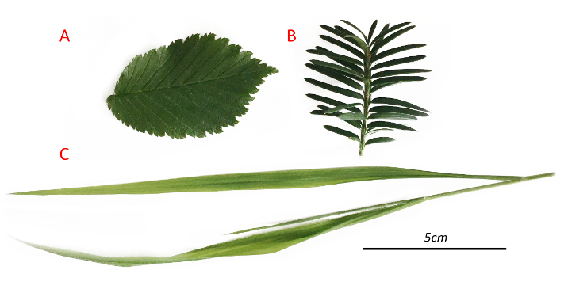
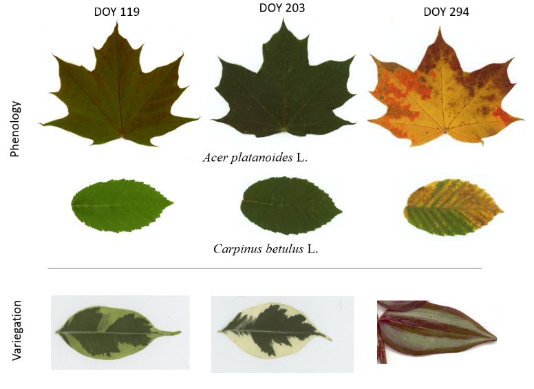
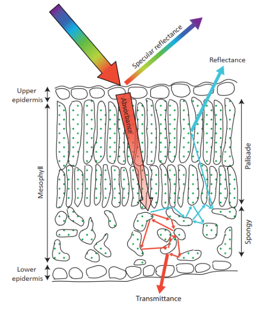
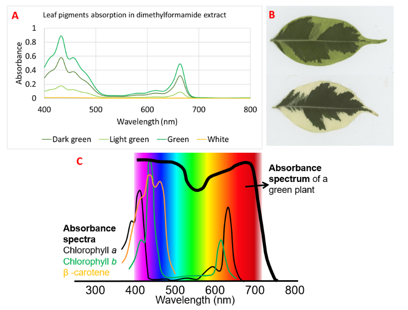
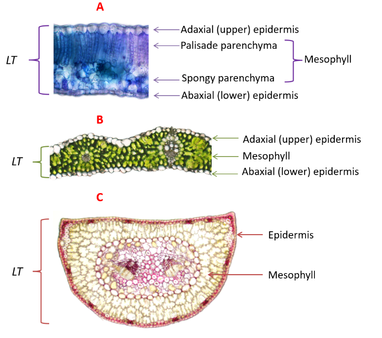
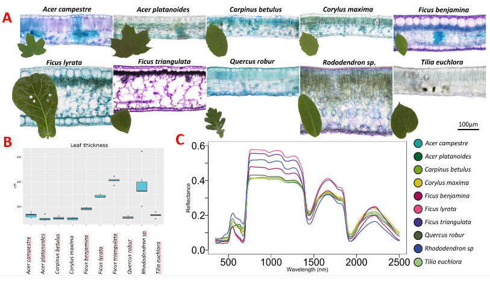
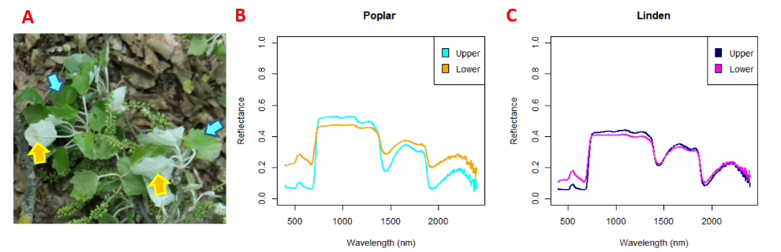
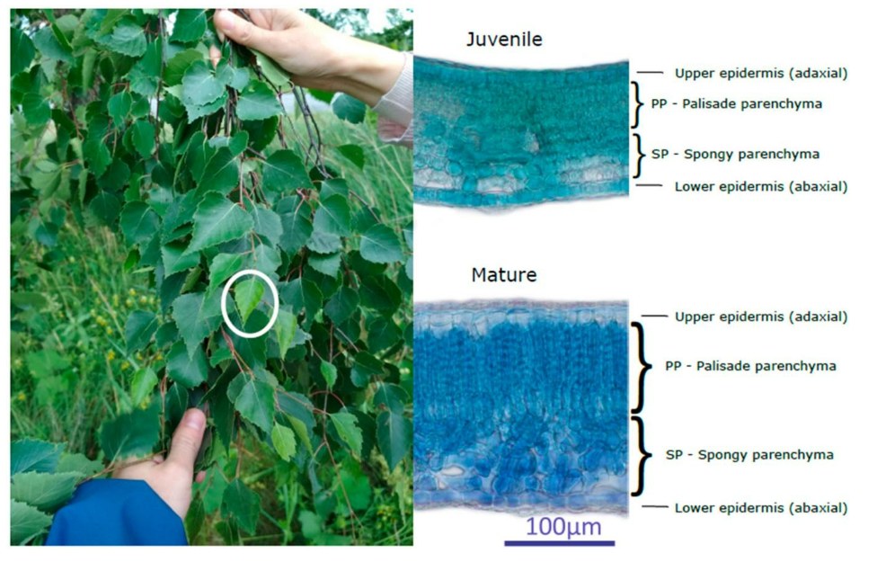
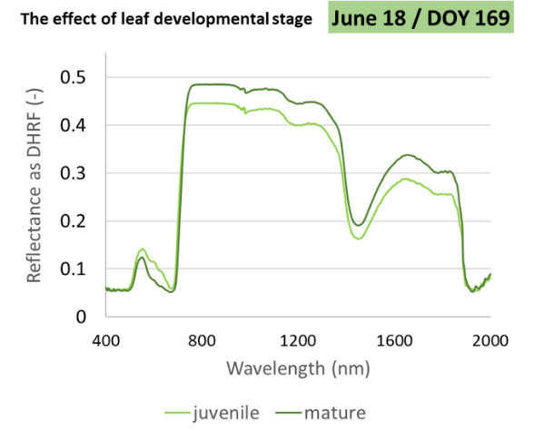
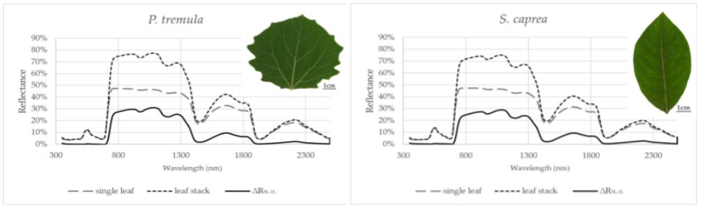

Optical parameters of foliage – leaf level
Plant functional traits at the leaf level are commonly used to predict ecosystem responses to environmental factors. Plant functional traits include both leaf biophysical traits (e.g., photosynthetic pigment content and water content) and structural traits (e.g., leaf thickness and proportion of photosynthetic and non-photosynthetic tissues). Optical parameters of foliage ‒ reflectance, transmittance and absorbance ‒ are determined by leaf biophysical and structural traits, which can be detected either destructively in the laboratory or non-destructively using leaf optical properties. Estimating chlorophyll and water content from leaf optical properties is a well-established methodology.
Objectives
In this theme, you will learn about:
- leaf structure and biophysical properties and how they determine foliage spectral reflectance curves
- identifying characteristics of foliage spectral reflectance curves and interpreting data from them
After finishing this theme you will be able to:
- read and understand the spectral reflectance curve of foliage
Introduction: leaf structure and biophysical properties
The plant leaf is a complex organ performing a variety of physiological functions. For simplicity, let us call “leaf biophysical properties” the complex of all chemical elements (e.g., nitrogen, carbon), biochemical compounds (e.g., chlorophyll a+b, carotenoids, anthocyanins), proteins, structural biopolymers (e.g., lignin, cellulose) of which the leaf is composed, as well as the way the leaf is built in terms of its anatomy (leaf internal structure) saturated by air and water (Asner, 1998). All these leaf biophysical properties naturally influence leaf optical properties - reflectance, absorbance, and transmittance - together with the contribution of leaf physiological status and phenology. It should be noted that most plants have flat, dorsiventral leaves (Figure 1A ). This is especially true of trees, thus gaining the name “broadleaved trees”. By contrast, coniferous trees have evergreen needle-like leaves (Figure 1B ), which are not shed in the autumn and are maintained by the plant for several seasons. Monocotyledonous plants (e.g., grasses) have yet another type of leaf — long and narrow with bilateral symmetry (Figure 1C ). Leaf morphology, structure, and size must be taken into account when designing measurements of leaf optical properties by laboratory spectroscopy.

Figure 1. Leaf morphology and size of three most common leaf shapes. A) flat, dorsiventral leaves of the majority of broadleaved trees, some herbs. B) needle-like leaves of coniferous trees (attached at certain angles to the twig); C) grass leaves, long and narrow with bilateral symmetry.
The leaf blade is not always homogeneous in terms of structure and pigment content. Heterogeneity in function, cellular structure, and pigment composition mainly affects photosynthetic function and can be explained by several factors: a) leaf developmental stage or ontogenetic phase corresponding to leaf phenology, leaf senescence; b) the natural appearance of leaf colour determined not only by photosynthetic pigments but also by photoprotective compounds (Figure 2 ). Change in ratios of photosynthetic pigments (chlorophylls) and photoprotective pigments (carotenoids, xanthophylls, anthocyanins) is most visible during leaf senescence (Figure 2, DOY 294 ). Variegated leaves naturally display patches of lighter or darker greens (corresponding to higher and lower chlorophyll concentrations).

Figure 2. Variation in leaf pigmentation due to phenology and leaf variegation. Phenology of two common broadleaved temperate tree species - Acer platanoides (Norway maple) and Carpinus betulus (Common hornbeam). DOY = day of the year. DOY 119 corresponds to juvenile spring leaves, DOY 203 represents mature summer leaves, DOY 294 corresponds to leaf senescence. Variegated leaves of Ficus benjamina (left and central ones) and Tradescantia zebrina (right).
Phenology refers to the normal progression of plants in temperate regions through developmental stages during the vegetative season. Bud dormancy breaks in early spring, then there is budburst, leaf primordia develop into juvenile leaves, then mature leaves function during the majority of vegetation season until the autumn when leaf senescence begins and plants transition into dormancy. Different tree and herb species can have different timing of phenological events what can be used for monitoring plant community during vegetation season. Timing of phenological events is crucial for estimation of vegetation functioning, role of vegetation in carbon cycle. There different online tools for monitoring leaf phenology (e.g., U.S.A. https://usanpn.org/; Europe https://www.eea.europa.eu/data-and-maps/indicators/plant-phenology; Czech republic https://www.fenofaze.cz/cz/).
Radiation used by plants on a leaf level: leaf optical properties.
Leaf optical properties are determined by the fraction of incident electromagnetic radiation that is absorbed (absorption), reflected (reflectance), or transmitted (transmittance) through the leaf (Figure 3 ). Visible light (400-700 nm) is the most familiar range of electromagnetic radiation, and overlaps with the so-called “photosynthetically active radiation” (PAR), however other regions of electromagnetic radiation can also be useful in remote sensing. How can leaf optical properties be used to generate data? If we know what wavelengths a particular leaf compound absorbs (i.e., it’s absorption maximum), then we can detect that compound based on the intensity of light reflected from the leaf in the same wavelength/spectral range. For example, chlorophyll a demonstrates absorption maxima at 642 and 392 nm; therefore, higher absorbances at these wavelengths correspond to higher concentrations of chlorophyll a. Light that is not absorbed may be reflected. In the case of chlorophyll, blue and red light are absorbed, leaving green light to be reflected. Not all radiation is absorbed or reflected; light also passes through leaves ‒ this is called transmittance.

Figure 3. Fate of radiation falling on a leaf and its reaction with leaf structure, leaf optical properties depicted on scheme of leaf cross section. Most radiation is absorbed (absorption), particularly in visible region for photosynthetic processes, so called photosynthetically active radiation (PAR). Part of the radiation is reflected (reflectance) and remaining, minor part is transmitted (transmittance). Regarding reflectance, there can be two components of reflectance – reflectance determined by internal leaf structure (diffuse) and specular reflectance determined by leaf surface structure, see subchapter 2 below for explanation.
Leaf surface reflectance: mirror-like or specular reflectance
The earlier assumption that the leaf is a Lambertian reflector (i.e., that it reflects light equally from all angles), has been rejected by many studies, including Gates et al. (1965) and Grant (1987). Nevertheless, there is an amount of the light that is reflected from the leaf surface rather than by the leaf internal structure and its biophysical components. Leaf surface reflectance is controlled by two mechanisms: 1) specular (mirror-like) reflection (Figure 3), in which the angles of incidence and reflection of light are equal (Vanderbilt et al., 1985), and 2) surface particle scattering, which depends on surface roughness and is overlooked in most plant studies (Grant et al., 1993). The leaf surface is formed by the epidermis, covered by a cuticle and sometimes also hairs (trichomes). In the case of the cuticle Grant et al., (1987) observed that the specular reflectance is completely polarized at 55°, partially polarized at other angles, and appears white. Trichomes on the epidermis also influence the specular (mirror-like) reflection of the leaf (Grant et al., 1993).
Leaf specular reflectance is sometimes considered a potential source of error in the non-destructive estimation of leaf biochemical parameters (Bell and Curran, 1992; Li et al., 2019) and there are difficulties in estimating chlorophyll content in plants with extremely high surface reflectance (Bousquet et al., 2005). However, specular reflectance alone can provide information about the leaf surface (McClendon, 1984; Neuwirthová et al., 2021b) and may be useful for improving RTMs (radiative transfer models) using structural traits (Qiu et al., 2019) - such as “leaf roughness” as a parameter, e.g., the DLM (dorsiventral leaf model) (Stuckens et al., 2009a).
Spectral reflectance curve of vegetation
The utilization of light energy for plant physiological processes has long been a topic of interest (Gates et al., 1965; Shull, 1929). Light interacts with various biochemical molecules in plant leaves (notably pigments, although other cellular contents as well), producing measurable absorption spectra, referred to as a spectral signature, i.e., spectral reflectance curve. Major leaf pigments in plants include chlorophylls, carotenoids, and anthocyanins. Chlorophyll pigments absorb mainly in the blue and red spectral areas (Grant, 1997), while the green spectral area is reflected, resulting in the characteristic green colour of most plants. Carotenoids absorb in the blue and green spectral areas, resulting in yellow-orange reflectance. The specific ranges absorbed by chlorophyll a+b (green) and carotenoids (yellow to orange) can be observed in Figure 4. Anthocyanins also absorb in the blue-green spectral areas, but typically reflect red or purple light.

Figure 4. Absorbance of leaf extracts in dimethyl formamide measured by spectrophotometer from different parts of variegated Ficus benjamina leaves (A, B). Differences in absorbance spectra of chlorophyll a, chlorophyll b, and β-carotene in organic solvent (thin black, green, and orange lines, respectively) and absorbance spectrum of a green plant when the pigments are localized in plastid membranes within mesophyll cells (bold line) (C). (Figure 4C modified from American Society of Plant Biologists 2015 / CC BY-NC 2.0)
Other chemical compounds in the leaf also have their own absorption features (reviewed in detail by Curran (1989)). For example, distinctive absorption features in the spectral reflectance curve are demonstrated by proteins, as well as lignin and cellulose (Serrano et al., 2002) and water (Eitel et al., 2006a) (Figure 5 ). Due to the absorption features of the leaf biophysical components mentioned above, the most commonly studied ranges of electromagnetic spectrum in connection to vegetation are: visible (VIS; (Niglas et al., 2017)) trough near-infrared region (NIR; (Slaton et al., 2001)) to short wave infrared (SWIR; (Cavender-Bares et al., 2016)) with occasional studies focusing on the thermal infrared region (TIR; (Gerber et al., 2011)). Features of the vegetation spectral reflectance curve of vegetation will be further explained in detail in the rest of this chapter.

Figure 5. Spectral reflectance curve of vegetation. Leaf biophysical properties listed above the reflectance curve - photosynthetic pigments, cellular structure, lignin and cellulose - correspond to driving factors determining its course in the range of 350-2500 nm. Red edge corresponds to a steep increase in reflectance on the margin of the red part of the visible spectrum.
The reflectance in the visible part of the electromagnetic spectrum is driven mainly by photosynthetic pigments
In spectroscopy studies, the visible part of the electromagnetic spectrum (VIS) is the region where the leaf optical properties correspond primarily to pigment content. Typically, the leaf reflectance curve in VIS can be described by a local minimum in the blue region (450-500 nm), a maximum in the green (540-560 nm) and then another minimum in the red (660-680 nm) (Figure 5 ). The decrease in reflectance corresponds to the absorption of chlorophyll: the maximum absorption of Chlorophyll a and Chlorophyll b is between 590-660 nm. Carotenoids have absorption maxima at 425, 450, and 480 nm (Gitelson and Merzlyak, 1994), (Figure 4 ). Anthocyanins have absorption maxima approximately within the interval 510-577 nm (extracted and depending on pH (Fossen et al., 1998). Both Carotenoids and anthocyanins significantly contribute to the change in leaf optical properties (Gitelson et al., 2009; Junker and Ensminger, 2016) during the chlorophyll degradation. These pigments are often seen as the red and orange colour in autumn leaves as they visibly accumulate during the nutrient resorption processes ahead of leaf senescence and tree dormancy in temperate regions (Hoch et al., 2003). These non-photosynthetic pigments have protective benefits for the plant, absorbing excess high energy light and acting as antioxidants (Gould, 2004; Maslova et al., 2021). Carotenoids and anthocyanins can be used as stress and senescence indicators (Junker and Ensminger, 2016) that can be detected non-destructively by optical signal (Gitelson et al., 2009).
Leaf surface structure also contributes to reflectance in VIS (Buschmann et al., 2012a; Shull, 1929); For example, hairy and waxy leaves have been found to show greater total reflectance in the VIS compared to the same leaves after hairs or wax removal. Water content also indirectly influences VIS reflectance (Carter, 1991).
The red edge and its inflection point of the vegetation spectral curve responds to stress state in plants.
The sharp increase in reflectance between VIS and NIR is called the “Red Edge” (RE) and is usually defined by a wavelength range of 680-750 nm (Figure 5 ). The RE is directly related to the chlorophyll content of green leaves (Sims and Gamon, 2002). Specifically, the position of the inflection point of the spectral curve (the extreme of the first derivative of the spectral curve at given wavelengths) serves as an indicator of plant stress (Campbell et al., 2004; Gitelson et al., 1996). A shift of the RE position towards lower wavelengths is called a “blue shift” and corresponds with a worsened physiological status (Rock et al., 1988), whereas its shift towards longer wavelength is called a “red shift” and corresponds to an improved plant physiological status.
The reflectance in the near infra-red region is affected by the leaf internal structure.
The internal structure of the leaf and the distribution of pigments affect the path of light in the leaf and, thus, determine the optical properties of the leaf. On one hand, the arrangement of leaf tissues and adaxial-abaxial polarity is regulated by a gene network (Conklin et al., 2019; Fukushima and Hasebe, 2014). Thus, leaf thickness (LT) is partly species-specific (Coste et al., 2010; Marenco et al., 2009). On the other hand, leaf anatomy, including LT, is influenced by many environmental factors such as: radiation intensity (Evans et al., 1994), and water availability (Aasamaa et al., 2005). Additional reading on leaf structure influencing its optical properties can be found in (Neuwirhtová, 2022).

Figure 6. Leaf internal structure shown as cross sections of representative leaf types. Outermost cell layer is the epidermis. Flat leaves (A and B) show an adaxial and abaxial epidermis while needles (C) show a surrounding epidermis. Below the epidermis is the mesophyll; this photosynthetic tissue is made up of cells containing chloroplasts with green chlorophyll pigment. LT = leaf thickness. Details about species and sample preparation: A) Dorsiventral flat leaf (Quercus robur) showing mesophyll differentiated into palisade and spongy. (Light microscopy, bright field, stained with toluidine blue. LT = 100 µm.) B) Grass leaf (Hordeum vulgare) with undifferentiated mesophyll. (Light microscopy, bright field, no staining. LT = 300 µm.) C) Coniferous needle (Pinus sylvestris) with undifferentiated mesophyll. (Light microscopy, bright field, stained with phloroglucinol to show lignified call walls (bright red). LT = 400 µm.)
The three most common leaf types are: A) dorsiventral flat leaves, typical for dicotyledonous plants (i.e., deciduous trees), B) long narrow leaves, typical for monocotyledonous plants (i.e., grasses), and C) needle-like leaves, typical for gymnosperms (i.e., coniferous trees) (Figure 1 shows macroscopic view on leaves Figure 6 shows anatomical leaf cross sections). The most external cell layer on leaves is the epidermis, which functions to prevent water loss, protect the plant from excess light, and prevent biological invaders. Internally-adjacent to the epidermis is the mesophyll. Photosynthesis occurs in mesophyll, which is made up of cells with thin cell walls and chloroplasts. In grass leaves (Figure 6B ) and coniferous needles (Figure 6C ), the mesophyll is “undifferentiated”. In broad leaves (Figure 6A ), the mesophyll is differentiated into palisade (near to the top/adaxial side of the leaf) and spongey (near to the bottom/abaxial side of the leaf) parenchyma layers. Leaf optical properties in the NIR are determined by leaf thickness, adaxial and abaxial epidermal properties, and mesophyll architecture. These leaf traits vary depending on the leaf developmental stage (Rapaport et al., 2014) and phenology (i.e., when during the growing season the leaf is being measured) (Yang et al., 2016), as well as environmental factors such as how much light the leaf is receiving. Leaves receiving more sunlight are known to be thicker than shaded leaves (Hanba et al., 2002); this creates a gradient in leaf structure within a canopy as different leaves receive different amount of light depending on their canopy position (Terashima et al., 2006). It is generally accepted that reflectance in the NIR (750-1350 nm) (Gates et al., 1965) is primarily influenced by the internal structure of the leaves (Figure 6 ) (Buschmann et al., 2012a; Slaton et al., 2001) and water content in leaf tissue, resulting in absorption maxima at approximately 970 and 1200 nm (Sims and Gamon, 2003) (Figure 5, 7C ).

Figure 7. Variation in leaf internal structure, leaf thickness and leaf reflectance (examples of dicotyledonous dorsiventral flat leaves with differentiated palisade and spongy parenchyma). A) Anatomical micrographs of cross sections of tree and shrub species with macroscopic leaf photos placed in the left of the microphotograph of a cross section. B) Leaf thickness of measured samples in µm presented as standard boxplot graph, n = 6. C) Reflectance curves at the leaf level from 350 to 2500 nm for presented woody species in A and B.
Epidermal and palisade cells (Figures 6A, 7A ) focus light: the columnar shape and arrangement of the palisade cells and chloroplasts inside of the cells affect light capturing and minimize light scattering within the leaves (Xiao et al., 2016). This enables light to penetrate deeper into the leaf where more chloroplasts are concentrated and intercellular air spaces scatter light and increase the likelihood of light absorption during photosynthesis (Vogelmann and Gorton, 2014).
The reflectance in the short-wave infra-red is driven by the cell structural compounds and water content
The spectral curve of vegetation, after its course in VIS and NIR, continues in the mid-infrared region (1350-2500 nm) (Gates et al., 1965). Currently it is referred to as the shortwave infrared region (SWIR). This spectral region is sometimes further subdivided into the SWIR1 (1500-1800 nm) and SWIR2 (2000-2400) regions (Cavender-Bares et al., 2016). Lignin and cellulose, two main cell structural compounds of the leaf, contribute to the reflectance in the SWIR region with specific absorption properties (Serrano et al., 2002) (Figure 4 ). Given their complex polymeric structure, which can be species-specific, the effect of cellulose and lignin on the shape and magnitude of the reflectance curve is not as straightforward as in case of pigment molecules. The SWIR reflectance in combination with the reflectance in NIR is influenced generally by the leaf dry mass per area (LMA). The reflectance of leaves in the SWIR, similarly to the NIR, is largely dependent on the water content of the leaves (i.e., water absorption at 1450, 1940, and 2500 nm (Carter, 1991) (Figure 4 ). Detection of leaf water content LWC, equivalent water thickness, or relative water content (Eitel et al., 2006b; Kokaly et al., 2009) are among the indirect methods to estimate water balance in vegetation, which is one of the main objectives of many remote sensing studies.
The radiation emitted and reflected in the thermal part of the spectrum is affected by leaf biophysical and structural traits
Compared to the measurement of reflectance in the previously described spectral regions of VIS, NIR and SWIR, acquisition of emission of thermal radiation by a leaf (i.e., thermal infrared region (TIR; 8-14 µm) (Gerber et al., 2011) Gerber et al., 2011) is not a common methodology in laboratory spectroscopy. However, emission and reflectance in the TIR can also be associated with physical changes in leaves, for example, water, lignin or cellulose contents and leaf area or plant stress (Buitrago Acevedo et al., 2017).
Leaf optical properties differ on upper and lower leaf sides of dorsiventral leaves
Leaf optical properties are known to differ from upper and lower leaf side (Buschmann et al., 2012, Lukeš et al., 2020) what is particularly important for flat dorsiventral leaves (Figures 6A, 7A ). Long palisade parenchyma cells, which have an isotropic arrangement (Figures 6A, 7A ), may facilitate light penetration deeper into the leaf interior, whereas spherical spongy mesophyll cells with a more anisotropic structure tend to scatter radiation (Vogelmann, 1993). Dorsiventral flat leaves are adapted for absorption of radiation incident on the upper leaf side. However, some plants change their leaf orientation a lot due to changes in environmental conditions (heliotropic plants) either to track the sunlight or avoid excessive irradiation to prevent overheating (soy, common bean). In such cases, the reflectance spectra at the canopy level will represent a mix of lower and upper leaf side signals at different proportions. The effect of internal leaf asymmetry and different upper and lower surfaces results in different reflectance if measured from upper and lower leaf side. The magnitude of the difference depends on the structural traits of epidermis (waxes, hairs) and internal mesophyll architecture (intercellular air spaces). Figure 8 shows the phenomenon on example of white poplar (Populus alba) (A,B) and small leaved Linden (Tilia cordata) (C). In both cases the lower reflectance in VIS for the upper side corresponds to adaptation to efficiently absorb the radiation in this orientation. The difference between adaxial (upper) and abaxial (lower) reflectance follows the same trends in both species; however, it is more pronounced in white poplar, where the external leaf surface asymmetry is more pronounced as well.

Figure 8. Dorsiventral leaf structure causes differences in leaf optical properties acquired from upper and lower leaf sides. A) Sample of white poplar (Populus alba) branch showing the macroscopic difference between the upper (darker green; blue arrows) and the lower (grey-green; yellow arrows) leaf side caused by the presence of waxes on the upper and trichomes (hairs) on the lower side. B) Reflectance of the upper and lower leaf side. C) Reflectance of the upper and lower leaf side in small leaved Linden (Tilia cordata).
In the study by (Lukeš et al., 2020), the optical properties of leaves from both the upper (adaxial) and lower (abaxial) sides were simulated in a leaf-level radiative transfer model called the Dorsiventral Leaf Model (DLM) (Stuckens et al., 2009b). The dorsiventral leaf optical properties that were simulated in this way were upscaled to the whole stand level — so-called TOC (top-of-canopy) reflectance — by coupling the simulation results of the leaf-level DLM model with a whole canopy model called Discrete Anisotropic Radiative Transfer model (DART) (Gastellu-Etchegorry et al., 2004). The effect of a simplified parameterization of optical properties (where dorsoventral asymmetry is typically neglected) on the overall reflectance of the forest stand was evaluated. The main conclusions was that neglecting differences in lower (abaxial) side leaf reflectance may introduce relative difference up to 20%, causing the underestimation of “one-sided” scenario compared to “two-sided” one (Lukeš et al., 2020).
Leaf optical properties differ for leaf developmental phases
Plants can have leaves of different developmental phases: starting with juvenile leaves in the spring; mature leaves, which are productive during the majority of vegetation season; and finally, senescing leaves with pigment changes in the end of the vegetative season. However, in woody species, there can be foliage formed by two major patterns of crown development: (a) proleptic leaves, result from a rhythmic branching process from buds formed before a period of dormancy, and (b) sylleptically formed leaves, resulting from a continuous branching process during the vegetative season from incompletely formed lateral buds (Halle et al., 2012). Both, proleptic and sylleptic growth can appear in one crown of the same tree, meaning leaves of different developmental stage can appear simultaneously in a tree crown. Thus, in many tree species, two developmental types of leaf occur: (a) pre-formed leaves (also called early leaves) that originate from overwintering buds after a dormancy stage in the beginning of the season, and (b) neo-formed leaves (late leaves) from buds without passing through the dormant period and instead developing entirely during the current growing season (Figure 9 ) (Critchfield, 1960). Sylleptically formed young leaves are often found in fast-growing tree species such as silver birch (B. pendula) (Deepak et al., 2019). Usually, the pre-formed leaves grow on both short and long shoots while the neo-formed leaves develop on long shoots. Since neo-formed leaves on sylleptic branches could form a substantial part of the upper- and external, sun-exposed crown layer (Broeckx et al., 2012), they are thought to have a significant contribution to the top-of-canopy reflectance signal. Leaves of different developmental origins—either proleptic or sylleptic—usually differ quantitatively in leaf thickness or ratio of palisade to spongy parenchyma (Neuwirthová et al., 2021a). Different ratio of palisade to spongy parenchyma then can affect leaf reflectance. The effect of the leaf developmental stage and the differences in pigment content and leaf structure on the reflectance are shown in Figure 10.

Figure 9. Pre-formed leaves (also called early leaves) formed by proleptic growth and neo-formed leaves (late leaves) formed by sylleptic growth. Branch of B. pendula during taking ground truth in June (right photo). White circle mark juvenile appearance of the leaf surrounded by mature leaves. In the middle cross-sections of two developmental stages (juvenile and mature) of B. pendula leaves sampled in June (18 June = DOY 169). (Right) description of leaf internal structure with a description of leaf tissues that were quantified in the present study. Palisade and spongy parenchyma comprise the photosynthetic mesophyll tissue. Dermal tissue is represented by the adaxial epidermis on the upper surface and abaxial epidermis on the lower surface. Fresh hand sections stained with toluidine blue, bright field microscopy, magnification 400×. (Figure by Neuwirthová et al. 2021/ CC BY 4.0)

Figure 10. The reflectance of birch leaves sampled in June (18 June = DOY 169) representing two different developmental stages described in Figure 9. Mind the difference in the visible part of the spectrum related to lower chlorophyll content in juvenile leaves. The higher reflectance in NIR and SWIR in mature leaves is determined by more developed intercellular spaces that scatter NIR and higher content of structural compounds (cellulose).
Leaf optical properties differ with leaf stacking.
It should be mentioned that the reflectance curve changes in case of leaf stacking. It is necessary to be aware of differences in shape of spectral reflectance curve, mainly in the NIR (near infrared) region, with the main driving factor being leaf structure for measurements of a single-leaf reflectance or using a leaf stack (Figure 11 ). By piling several layers of leaves, we technically increase chlorophyll content, leaf area index, and leaf mass per area unit (LAI and LMA). In addition, the effect of the internal leaf structure such as both volume and surface of intercellular spaces is enhanced in a leaf stack. However, these effects of a leaf stacking altogether can influence the correlation between leaf biophysical traits and leaf optical properties including vegetation indices, particularly those derived from NIR reflectance values (Neuwirthová et al., 2017). If the vegetation indices are used to assess plant physiological status in various times of the vegetative season, possible changes induced by the particular contact probe measurement setup regarding the leaf stacking should be considered (Neuwirthová et al., 2017). It is necessary to take in account that the real canopy-scale reflectance is affected by additional factors, such as leaf clumping, leaf angle distribution, presence of non-photosynthetic structures (branches and twigs) and soil/understory reflectance background as summarized, e.g., (Homolová et al., 2013).

Figure 11. Averaged reflectance curves measured by a contact probe for a single leaf, a leaf stack and a difference (∆R5L–1L) between the reflectance measured on a leaf stack (5L) and a single leaf (1L) of Populus tremula (left) and Salix caprea (right). The mean reflectance (%) during the six months. n = 10 trees. (Figure modified from Neuwirthová et al. 2017/ CC BY 4.0)
Self-evaluation quiz
Next unit
Proceed with Principles of laboratory spectroscopy
References
Aasamaa, K., Niinemets, Ü., Sõber, A., 2005. Leaf hydraulic conductance in relation to anatomical and functional traits during Populus tremula leaf ontogeny. Tree Physiology 25, 1409–1418.
Asner, G.P., 1998. Biophysical and biochemical sources of variability in canopy reflectance. Remote sensing of Environment 64, 234–253. Bell, C.C., Curran, P.J., 1992. The effect of specular reflectance on the relationship between reflectance and vegetation amount. International Journal of Remote Sensing 13, 2751–2757. https://doi.org/10.1080/01431169208904077
Bousquet, L., Lachérade, S., Jacquemoud, S., Moya, I., 2005. Leaf BRDF measurements and model for specular and diffuse components differentiation. Remote Sensing of Environment 98, 201–211. https://doi.org/10.1016/j.rse.2005.07.005
Broeckx, L.S., Verlinden, M.S., Vangronsveld, J., Ceulemans, R., 2012. Importance of crown architecture for leaf area index of different Populus genotypes in a high-density plantation. Tree Physiology 32, 1214–1226. https://doi.org/10.1093/treephys/tps083
Buitrago Acevedo, M.F., Groen, T.A., Hecker, C.A., Skidmore, A.K., 2017. Identifying leaf traits that signal stress in TIR spectra. ISPRS Journal of Photogrammetry and Remote Sensing 125, 132–145. https://doi.org/10.1016/j.isprsjprs.2017.01.014
Buschmann, C., Lenk, S., Lichtenthaler, H.K., 2012a. Reflectance spectra and images of green leaves with different tissue structure and chlorophyll content. Israel Journal of Plant Sciences 60, 49–64. https://doi.org/10.1560/IJPS.60.1-2.49
Buschmann, C., Lenk, S., Lichtenthaler, H.K., 2012b. Reflectance spectra and images of green leaves with different tissue structure and chlorophyll content. Israel Journal of Plant Sciences 60, 49–64. https://doi.org/10.1560/IJPS.60.1-2.49
Campbell, P.K.E., Rock, B.N., Martin, M.E., Neefus, C.D., Irons, J.R., Middleton, E.M., Albrechtova, J., 2004. Detection of initial damage in Norway spruce canopies using hyperspectral airborne data. Int. J. Remote Sens. 25, 5557–5583. https://doi.org/10.1080/01431160410001726058
Carter, G.A., 1991. Primary and Secondary Effects of Water Content on the Spectral Reflectance of Leaves. American Journal of Botany 78, 916–924. https://doi.org/10.2307/2445170
Cavender-Bares, J., Meireles, J.E., Couture, J.J., Kaproth, M.A., Kingdon, C.C., Singh, A., Serbin, S.P., Center, A., Zuniga, E., Pilz, G., Townsend, P.A., 2016. Associations of Leaf Spectra with Genetic and Phylogenetic Variation in Oaks: Prospects for Remote Detection of Biodiversity. Remote Sensing 8, 221. https://doi.org/10.3390/rs8030221
Conklin, P.A., Strable, J., Li, S., Scanlon, M.J., 2019. On the mechanisms of development in monocot and eudicot leaves. New Phytologist 221, 706–724. https://doi.org/10.1111/nph.15371
Coste, S., Baraloto, C., Leroy, C., Marcon, É., Renaud, A., Richardson, A.D., Roggy, J.-C., Schimann, H., Uddling, J., Hérault, B., 2010. Assessing foliar chlorophyll contents with the SPAD-502 chlorophyll meter: a calibration test with thirteen tree species of tropical rainforest in French Guiana. Ann. For. Sci. 5.
Critchfield, W.B., 1960. Leaf Dimorphism in Populus Trichocarpa. American Journal of Botany 47, 699–711.
Curran, P.J., 1989. Remote sensing of foliar chemistry. Remote Sensing of Environment 30, 271–278. https://doi.org/10.1016/0034-4257(89)90069-2
Deepak, M., Keski-Saari, S., Fauch, L., Granlund, L., Oksanen, E., Keinänen, M., 2019. Leaf Canopy Layers Affect Spectral Reflectance in Silver Birch. Remote Sensing 11, 2884. https://doi.org/10.3390/rs11242884
Eitel, J.U.H., Gessler, P.E., Smith, A.M.S., Robberecht, R., 2006a. Suitability of existing and novel spectral indices to remotely detect water stress in Populus spp. Forest Ecology and Management 229, 170–182. https://doi.org/10.1016/j.foreco.2006.03.027
Eitel, J.U.H., Gessler, P.E., Smith, A.M.S., Robberecht, R., 2006b. Suitability of existing and novel spectral indices to remotely detect water stress in Populus spp. Forest Ecology and Management 229, 170–182. https://doi.org/10.1016/j.foreco.2006.03.027
Evans, J., Caemmerer, S., Setchell, B., Hudson, G., 1994. The Relationship Between CO2 Transfer Conductance and Leaf Anatomy in Transgenic Tobacco With a Reduced Content of Rubisco. Functional Plant Biol. 21, 475. https://doi.org/10.1071/PP9940475
Fossen, T., Cabrita, L., Andersen, O.M., 1998. Colour and stability of pure anthocyanins in¯uenced by pH including the alkaline region. Food Chemistry 63, 435–440.
Fukushima, K., Hasebe, M., 2014. Adaxial-abaxial polarity: The developmental basis of leaf shape diversity: development and evolution of leaf types. genesis 52, 1–18. https://doi.org/10.1002/dvg.22728
Gastellu-Etchegorry, J.P., Martin, E., Gascon, F., 2004. DART: a 3D model for simulating satellite images and studying surface radiation budget. International Journal of Remote Sensing 25, 73–96. https://doi.org/10.1080/0143116031000115166
Gates, D.M., Keegan, H.J., Schleter, J.C., Weidner, V.R., 1965. Spectral properties of plants. Applied optics 4, 11–20.
Gerber, F., Marion, R., Olioso, A., Jacquemoud, S., Ribeiro da Luz, B., Fabre, S., 2011. Modeling directional–hemispherical reflectance and transmittance of fresh and dry leaves from 0.4μm to 5.7μm with the PROSPECT-VISIR model. Remote Sensing of Environment 115, 404–414. https://doi.org/10.1016/j.rse.2010.09.011
Gitelson, A., Merzlyak, M.N., 1994. Spectral Reflectance Changes Associated with Autumn Senescence of Aesculus hippocastanum L. and Acer platanoides L. Leaves. Spectral Features and Relation to Chlorophyll Estimation. Journal of Plant Physiology 143, 286–292. https://doi.org/10.1016/S0176-1617(11)81633-0
Gitelson, A.A., Chivkunova, O.B., Merzlyak, M.N., 2009. Nondestructive estimation of anthocyanins and chlorophylls in anthocyanic leaves. American Journal of Botany 96, 1861–1868. https://doi.org/10.3732/ajb.0800395
Gitelson, A.A., Merzlyak, M.N., Lichtenthaler, H.K., 1996. Detection of Red Edge Position and Chlorophyll Content by Reflectance Measurements Near 700 nm. Journal of Plant Physiology 148, 501–508. https://doi.org/10.1016/S0176-1617(96)80285-9
Gould, K.S., 2004. Nature’s Swiss Army Knife: The Diverse Protective Roles of Anthocyanins in Leaves. J Biomed Biotechnol 2004, 314–320. https://doi.org/10.1155/S1110724304406147
Grant, L., 1987. Diffuse and specular characteristics of leaf reflectance. Remote Sensing of Environment 22, 309–322. https://doi.org/10.1016/0034-4257(87)90064-2
Grant, L., Daughtry, C.S.T., Vanderbilt, V.C., 1993. Polarized and specular reflectance variation with leaf surface features. Physiol Plant 88, 1–9. https://doi.org/10.1111/j.1399-3054.1993.tb01753.x
Grant, L., Daughtry, C.S.T., Vanderbilt, V.C., 1987. Polarized and non-polarized leaf reflectances of Coleus blumei. Environmental and Experimental Botany 27, 139–145. https://doi.org/10.1016/0098-8472(87)90064-5
Grant, R.H., 1997. Partitioning of biologically active radiation in plant canopies. Int J Biometeorol 40, 26–40. https://doi.org/10.1007/BF02439408
Halle, F., Oldeman, R.A.A., Tomlinson, P.B., 2012. Tropical Trees and Forests: An Architectural Analysis. Springer Science & Business Media. Hanba, Y.T., Kogami, H., Terashima, I., 2002. The effect of growth irradiance on leaf anatomy and photosynthesis in Acer species differing in light demand. Plant, Cell & Environment 25, 1021–1030. https://doi.org/10.1046/j.1365-3040.2002.00881.x
Hoch, W.A., Singsaas, E.L., McCown, B.H., 2003. Resorption Protection. Anthocyanins Facilitate Nutrient Recovery in Autumn by Shielding Leaves from Potentially Damaging Light Levels. Plant Physiology 133, 1296–1305. https://doi.org/10.1104/pp.103.027631
Homolová, L., Malenovský, Z., Clevers, J.G.P.W., García-Santos, G., Schaepman, M.E., 2013. Review of optical-based remote sensing for plant trait mapping. Ecological Complexity 15, 1–16. https://doi.org/10.1016/j.ecocom.2013.06.003
Junker, L.V., Ensminger, I., 2016. Relationship between leaf optical properties, chlorophyll fluorescence and pigment changes in senescing Acer saccharum leaves. Tree Physiology 36, 694–711. https://doi.org/10.1093/treephys/tpv148
Kokaly, R.F., Asner, G.P., Ollinger, S.V., Martin, M.E., Wessman, C.A., 2009. Characterizing canopy biochemistry from imaging spectroscopy and its application to ecosystem studies. Remote Sensing of Environment 113, S78–S91. https://doi.org/10.1016/j.rse.2008.10.018
Li, Y., Chen, Y., Huang, J., 2019. An Approach to Improve Leaf Pigment Content Retrieval by Removing Specular Reflectance Through Polarization Measurements. IEEE Transactions on Geoscience and Remote Sensing 57, 2173–2186. https://doi.org/10.1109/TGRS.2018.2871830
Lukeš, P., Neuwirthová, E., Lhotáková, Z., Janoutová, R., Albrechtová, J., 2020. Upscaling seasonal phenological course of leaf dorsiventral reflectance in radiative transfer model. Remote Sensing of Environment 246, 111862. https://doi.org/10.1016/j.rse.2020.111862
Marenco, R.A., Antezana-Vera, S.A., Nascimento, H.C.S., 2009. Relationship between specific leaf area, leaf thickness, leaf water content and SPAD-502 readings in six Amazonian tree species. Photosynt. 47, 184–190. https://doi.org/10.1007/s11099-009-0031-6
Maslova, T.G., Markovskaya, E.F., Slemnev, N.N., 2021. Functions of Carotenoids in Leaves of Higher Plants (Review). Biol Bull Rev 11, 476–487. https://doi.org/10.1134/S2079086421050078
McClendon, J.H., 1984. The Micro-Optics of Leaves. I. Patterns of Reflection from the Epidermis 8.
Neuwirhtová, E., 2022. Optical properties of the leaf in relation to its anatomical traits. (Ph.D. Thesis). Charles university, Faculty of Science, Prague, Czechia.
Neuwirthová, E., Kuusk, A., Lhotáková, Z., Kuusk, J., Albrechtová, J., Hallik, L., 2021a. Leaf Age Matters in Remote Sensing: Taking Ground Truth for Spectroscopic Studies in Hemiboreal Deciduous Trees with Continuous Leaf Formation. Remote Sensing 13, 1353. https://doi.org/10.3390/rs13071353
Neuwirthová, E., Lhotáková, Z., Albrechtová, J., 2017. The Effect of Leaf Stacking on Leaf Reflectance and Vegetation Indices Measured by Contact Probe during the Season. Sensors 17, 1202. https://doi.org/10.3390/s17061202
Neuwirthová, E., Lhotáková, Z., Lukeš, P., Albrechtová, J., 2021b. Leaf Surface Reflectance Does Not Affect Biophysical Traits Modelling from VIS-NIR Spectra in Plants with Sparsely Distributed Trichomes. Remote Sensing 13, 4144. https://doi.org/10.3390/rs13204144
Niglas, A., Papp, K., Sękiewicz, M., Sellin, A., 2017. Short-term effects of light quality on leaf gas exchange and hydraulic properties of silver birch (Betula pendula). Tree Physiology 37, 1218–1228. https://doi.org/10.1093/treephys/tpx087
Qiu, Chen, Croft, Li, Zhang, Zhang, Ju, 2019. Retrieving Leaf Chlorophyll Content by Incorporating Variable Leaf Surface Reflectance in the PROSPECT Model. Remote Sensing 11, 1572. https://doi.org/10.3390/rs11131572
Rapaport, T., Hochberg, U., Rachmilevitch, S., Karnieli, A., 2014. The Effect of Differential Growth Rates across Plants on Spectral Predictions of Physiological Parameters. PLoS ONE 9, e88930. https://doi.org/10.1371/journal.pone.0088930
Rock, B.N., Hoshizaki, T., Miller, J.R., 1988. Comparison of in situ and airborne spectral measurements of the blue shift associated with forest decline. Remote Sensing of Environment, Imaging Spectrometry 24, 109–127. https://doi.org/10.1016/0034-4257(88)90008-9
Serrano, L., Peñuelas, J., Ustin, S.L., 2002. Remote sensing of nitrogen and lignin in Mediterranean vegetation from AVIRIS data: Decomposing biochemical from structural signals. Remote Sensing of Environment 81, 355–364. https://doi.org/10.1016/S0034-4257(02)00011-1
Shull, C.A., 1929. A Spectrophotometric Study of Reflection of Light from Leaf Surfaces. Botanical Gazette 87, 583–607. https://doi.org/10.1086/333965
Sims, D.A., Gamon, J.A., 2003. Estimation of vegetation water content and photosynthetic tissue area from spectral reflectance: a comparison of indices based on liquid water and chlorophyll absorption features. Remote Sensing of Environment 84, 526–537. https://doi.org/10.1016/S0034-4257(02)00151-7
Sims, D.A., Gamon, J.A., 2002. Relationships between leaf pigment content and spectral reflectance across a wide range of species, leaf structures and developmental stages. Remote sensing of environment 81, 337–354.
Slaton, M.R., Hunt, E.R., Smith, W.K., 2001. Estimating near-infrared leaf reflectance from leaf structural characteristics. American Journal of Botany 88, 278–284.
Stuckens, J., Verstraeten, W.W., Delalieux, S., Swennen, R., Coppin, P., 2009a. A dorsiventral leaf radiative transfer model: Development, validation and improved model inversion techniques. Remote Sensing of Environment 113, 2560–2573. https://doi.org/10.1016/j.rse.2009.07.014
Stuckens, J., Verstraeten, W.W., Delalieux, S., Swennen, R., Coppin, P., 2009b. A dorsiventral leaf radiative transfer model: Development, validation and improved model inversion techniques. Remote Sensing of Environment 113, 2560–2573. https://doi.org/10.1016/j.rse.2009.07.014
Terashima, I., Hanba, Y.T., Tazoe, Y., Vyas, P., Yano, S., 2006. Irradiance and phenotype: comparative eco-development of sun and shade leaves in relation to photosynthetic CO2 diffusion. Journal of Experimental Botany 57, 343–354.
Vanderbilt, V.C., Grant, L., Daughtry, C.S.T., 1985. Polarization of light scattered by vegetation. Proceedings of the IEEE 73, 1012–1024. https://doi.org/10.1109/PROC.1985.13232
Vogelmann, T.C., 1993. Plant Tissue Optics. Annual review of plant biolog 231–51.
Vogelmann, T.C., Gorton, H.L., 2014. Leaf: Light Capture in the Photosynthetic Organ.
Xiao, Y., Tholen, D., Zhu, X.-G., 2016. The influence of leaf anatomy on the internal light environment and photosynthetic electron transport rate: exploration with a new leaf ray tracing model. J Exp Bot 67, 6021–6035. https://doi.org/10.1093/jxb/erw359
Yang, X., Tang, J., Mustard, J.F., Wu, J., Zhao, K., Serbin, S., Lee, J.-E., 2016. Seasonal variability of multiple leaf traits captured by leaf spectroscopy at two temperate deciduous forests. Remote Sensing of Environment 179, 1–12. https://doi.org/10.1016/j.rse.2016.03.026